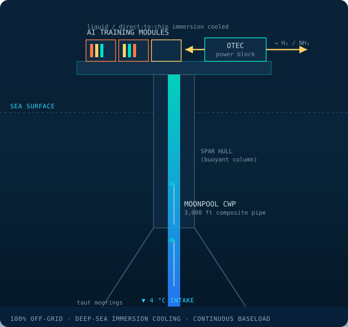

TROIB · Engineering Brief
Co-Locating AI Compute on Decommissioned Deepwater Platforms
A retrofit architecture that intercepts late-life Spar and Tension-Leg Platforms in the Gulf of Mexico, installs an OTEC power block on deck, and cools direct-to-chip AI training modules with 4 °C seawater — driving facility PUE toward 1.02–1.05 entirely off-grid.
Abstract
The Gulf of Mexico holds hundreds of deepwater production platforms approaching end-of-field life. TROIB proposes to intercept late-life Spar and Tension-Leg Platforms (TLPs) in the Mississippi Canyon and Alaminos Canyon protraction areas before decommissioning, retrofit their moonpools for 915 m (3,000 ft) composite cold-water pipes, mount an Ocean Thermal Energy Conversion (OTEC) power block on deck, and deploy ruggedized, liquid-cooled direct-to-chip AI training modules in the same footprint. Because 4 °C deep seawater is used directly as the cooling sink, mechanical-chiller overhead is nearly eliminated and facility Power Usage Effectiveness (PUE) approaches 1.02–1.05. The platform is fully off-grid; surplus OTEC power is converted to green hydrogen and ammonia for export. Acquiring the host structure through the federal “Rigs-to-Reefs” framework removes up to 40 % of structural and anchoring capital cost. This brief develops the PUE rationale and the seawater heat-rejection mass-balance that sizes the cooling system.
Why Re-Use a Platform
A deepwater Spar or TLP is, in engineering terms, a pre-built deep-ocean access structure: it is already station-kept over thousands of metres of water, already carries a moonpool through its centre, and already supports thousands of tonnes of topside equipment. Decommissioning such a structure is expensive and carbon-intensive. The TROIB thesis is that the very attributes that make a platform costly to remove — deep-water station-keeping, structural deck capacity, and a central moonpool — are exactly what an offshore OTEC-plus-compute facility requires.
Under the U.S. Rigs-to-Reefs framework, operators may transfer qualifying structures in place rather than fully removing them. TROIB extends this concept: instead of converting a platform solely into an artificial reef, the sub-sea jacket and mooring serve as the reef habitat while the topside is repurposed for energy and compute. Avoiding new-build hull fabrication and deepwater anchoring is estimated to remove up to 40 % of the structural and anchoring portion of capital expenditure.
Retrofit Architecture
The retrofit reorganizes the platform into three stacked functional zones, shown in cross-section in Figure 1.
Moonpool and cold-water pipe
The existing drilling moonpool is repurposed as the structural pass-through for a 915 m composite (fibre-reinforced-polymer) cold-water pipe. Routing the CWP through the moonpool rather than over the side protects it from wave loading at the splash zone and uses the hull as the reaction structure for pipe weight and current drag. The CWP delivers the ≈4 °C cold seawater that serves both the OTEC condenser and the compute cooling loop.
Deck power block
The main deck carries the OTEC closed-cycle ammonia power block — evaporator, turbine-generator, condenser, and feed pump — described in companion brief TROIB-EB-01. The power block converts the 20 °C thermal gradient into net electricity that powers the compute modules directly, with no grid interconnection.
Compute modules
AI training hardware is housed in ruggedized, marine-rated modules using direct-to-chip liquid cooling and, for the densest racks, single-phase immersion cooling. A closed dielectric or water-glycol loop carries heat from the silicon to a titanium plate heat exchanger, where it is rejected to the cold seawater stream. Crucially, the cold sink is already at 4 °C, so no vapour-compression chiller is needed.

PUE and the Seawater Advantage
Power Usage Effectiveness is the industry metric for data-center energy overhead:
A PUE of 1.0 is the theoretical ideal in which every joule entering the facility reaches the compute silicon. In a conventional air-cooled cloud data center, mechanical chillers, computer-room air handlers, and humidity control push PUE to 1.4–1.6 — meaning 40–60 % of energy is spent not computing. The single largest contributor to that overhead is the refrigeration plant that lifts heat from a warm data hall to an even warmer outdoor environment.
The TROIB platform inverts this thermodynamic problem. The heat sink is not 35 °C summer air but 4 °C abyssal seawater. Heat flows spontaneously from the ≈45–60 °C chip coolant down to the cold sea, so the only cooling parasitic is the pumping energy to circulate seawater and coolant — there is no compressor lifting heat against a gradient. This collapses cooling overhead and yields a design-target PUE of 1.02–1.05. The companion benefit is that warm-rich coolant return temperatures permit high seawater ΔT, reducing required pumped volume.
Heat-Rejection Mass Balance
Sizing the seawater cooling system is a steady-state energy balance: the seawater mass flow must carry away the full IT heat load at the allowable temperature rise. From Q = ṁ·cp·ΔT, the required cold-seawater mass flow is:
where Q is the heat load to reject (kW), cp is the specific heat of seawater (≈3.99 kJ/kg·K), and ΔT is the seawater temperature rise across the heat exchanger. Essentially all electrical power delivered to the silicon becomes heat, so Q ≈ IT load.
Worked example — one rack
Take a dense AI training rack dissipating Q = 40 kW and allow the seawater to warm by ΔT = 8 K (from 4 °C to 12 °C):
So roughly 1.25 kg/s (≈1.2 L/s) of seawater rejects a full 40 kW rack. Scaling to the Year-3 target of ≈3,500 racks at this density gives an aggregate IT load near 140 MWth and a cooling seawater demand on the order of 4,400 kg/s — well within the flow already drawn through the CWP for the OTEC condenser, so the cooling and power loops share the same cold-water infrastructure. Table 1 tabulates the heat-rejection scaling.
| Aggregation | Racks | Heat load Q | Seawater ṁ | Volumetric flow |
|---|---|---|---|---|
| Single rack | 1 | 40 kW | 1.25 kg/s | ~1.2 L/s |
| One module (250 racks) | 250 | 10 MW | 314 kg/s | ~0.31 m³/s |
| Year-3 platform | ~3,500 | 140 MW | ~4,400 kg/s | ~4.3 m³/s |
Off-Grid Operation and Energy Export
The platform is an energy island. OTEC net power feeds the compute load and balance-of-plant directly; there is no subsea export cable in the Gulf compute zone and therefore no interconnection-queue dependency — a decisive advantage given that grid interconnection is now the rate-limiting step for AI buildout onshore. When training demand is below available generation, surplus power drives on-board electrolysis, producing green hydrogen that is synthesized to ammonia (NH3) for tanker export. Ammonia doubles as the OTEC working fluid and as a shippable energy carrier, simplifying on-board chemical logistics.
This load-following behaviour — compute when demanded, molecules when not — keeps the OTEC plant near its design point continuously, maximizing capacity factor and smoothing the economics of the high-capital power block.
Nomenclature
| PUE | Power Usage Effectiveness (dimensionless) |
|---|---|
| Etotal | Total facility energy (kWh) |
| EIT | Energy delivered to compute hardware (kWh) |
| Q | Heat load to reject (kW) |
| ṁ | Cooling seawater mass-flow rate (kg/s) |
| cp | Specific heat of seawater (≈3.99 kJ/kg·K) |
| ΔT | Seawater temperature rise across exchanger (K) |
| CWP | Cold-water pipe (915 m / 3,000 ft) |
| TLP | Tension-Leg Platform |
| OTEC | Ocean Thermal Energy Conversion |
Selected References (illustrative)
- Bureau of Safety and Environmental Enforcement. Rigs-to-Reefs Policy and Decommissioning Framework, Gulf of Mexico OCS Region. Conceptual reference, illustrative.
- The Green Grid. PUE: A Comprehensive Examination of the Metric. Illustrative bibliographic entry.
- ASHRAE Technical Committee 9.9. Liquid Cooling Guidelines for Datacom Equipment Centers. Illustrative bibliographic entry.
- U.S. Department of Energy. Direct-to-Chip and Immersion Cooling for High-Density AI Compute. Conceptual reference, illustrative.
- TROIB Project. Engineering Brief TROIB-EB-01: Closed-Cycle Ammonia OTEC. Companion document.